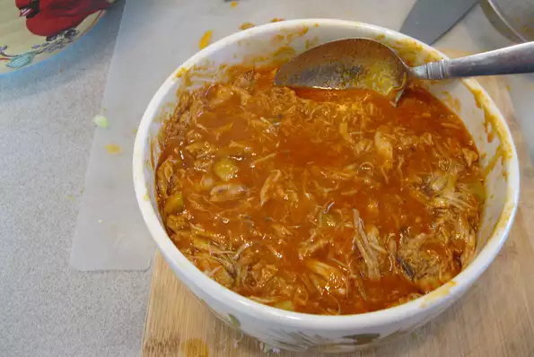

Wat

Meat wreckage
What am I watching.
Ingredients
- 1 ½ pounds bone-in, skin-on chicken thigh
- 1 teaspoon sal
- ¼ cup unsalted butte
- ¼ cup Louisiana-style hot sauc
- 3 tablespoons wate
- ⅓ cup finely chopped celer
- 1 pinch cayenne pepper, or to taste (Optional)
Steps
- Heat a dry saucepan over high heat. Place thighs skin-side down in the hot pan and cook until skin is browned, seasoning generously with salt, about 5 minutes. Turn thighs over once skin no longer sticks to the pan. Add butter, Louisiana hot sauce, and water. Toss thighs around to stir the sauce until butter is melted.
- Return heat to low, cover, and simmer until meat can be easily pulled from the bone, about 1 1/2 hours. Remove from heat and break meat up into smaller pieces using tongs, stirring it into the sauce. Let mixture cool to room temperature, at least 20 minutes.
- Transfer meat to a mixing bowl, shredding it into smaller pieces. Discard bones, cartilage, and skin.
- Bring the sauce in the pan to a boil over medium-high heat. Let reduce until slightly thickened, about 2 minutes. Pour sauce into the bowl of chicken meat and mix thoroughly. Taste for seasoning; add salt, cayenne, and hot sauce as needed. Add celery and mix one last time.
- Pack chicken mixture into a pint-sized jar or crock, and top with a spoonful of hot sauce if desired, and seal jar. Refrigerate until ready to serve. Remove from fridge 30 minutes before service to allow spread to warm up a bit.
- Preheat the oven to 350 degrees F (175 degrees C) in the meantime. Arrange baguette slices on a baking sheet. Brush tops generously with butter.
- Bake in the preheated oven until edges start to turn golden brown, about 20 minutes.
- Meanwhile, smear butter and blue cheese together in a small bowl until combined.
- Remove toasted baguette slices and let cool slightly, leaving the oven on. Spread blue cheese spread on top, then continue baking crostini until golden brown and crispy, 10 to 12 minutes. Serve with the Buffalo chicken spread.